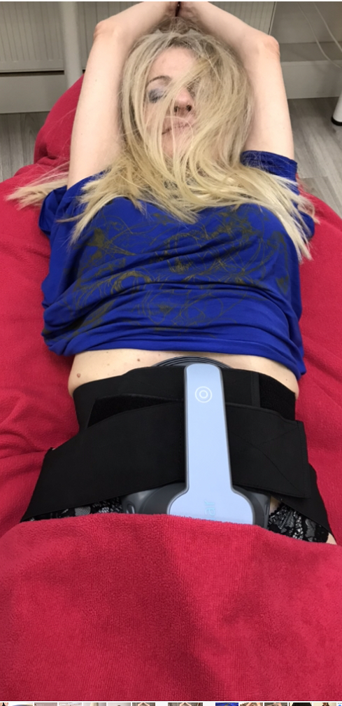
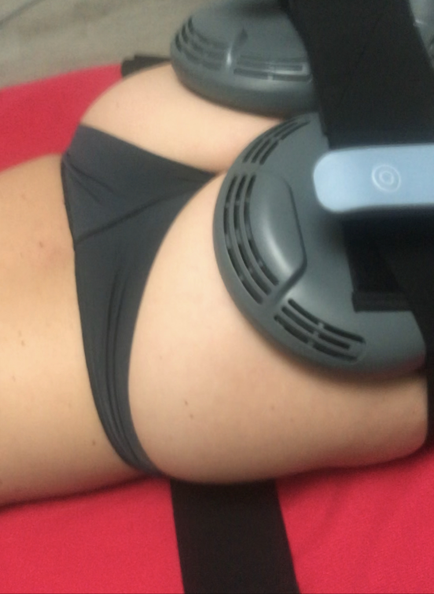

Približen čas ene obravnave izbranega predela.

Tonus · mišice · silhueta
EMBipolar Sculpt Neo
Neinvazivna estetska obravnava za oblikovanje telesa, podporo mišičnemu tonusu in bolj definirano silhueto.
Nova generacija oblikovanja telesa
Mišični tonus in kontura brez kirurškega posega.
EMBipolar Sculpt Neo združuje podporo mišičnim kontrakcijam in radiofrekvenčno segrevanje. Namenjen je tistim, ki želijo oblikovati izbrane predele telesa, izboljšati občutek čvrstosti in podpreti bolj definirano silhueto.
Kombinacija elektromagnetne stimulacije in radiofrekvenčnega segrevanja.
Program se običajno načrtuje v seriji več zaporednih obravnav.
Kaj je EMSculpt?
Visokointenzivne mišične kontrakcije.
EMSculpt temelji na tehnologiji HIFEM, ki z elektromagnetnimi impulzi spodbuja močne mišične kontrakcije. Mišice se med obravnavo krčijo intenzivneje, kot bi jih lahko zavestno aktivirali pri običajni vadbi.
EMBipolar Sculpt Neo gre korak dlje, saj poleg mišične stimulacije vključuje še radiofrekvenčni modul, ki segreva tkivo in podpira celostno oblikovanje telesa.


Kako deluje?
Mišice se aktivirajo, tkivo se segreva, telo pa postopoma odgovarja.
HIFEM stimulacija
Elektromagnetno polje sproži zelo intenzivne mišične kontrakcije na izbranem predelu telesa.
Radiofrekvenčna toplota
RF energija segreva tkivo in podpira proces oblikovanja ter izboljšanja občutka čvrstosti kože.
Postopen rezultat
Odziv se razvija postopno. Končni videz je odvisen od telesa, navad, hidracije in načrta obravnav.
EMSculpt vs. EMBipolar Sculpt Neo
Kaj je glavna razlika?
Mišična stimulacija
Klasični EMSculpt se osredotoča predvsem na spodbujanje mišičnih kontrakcij in podporo mišičnemu tonusu. Primeren je za osebe, ki želijo več poudarka na aktivaciji mišic.
Mišice + RF segrevanje
EMBipolar Sculpt Neo poleg HIFEM stimulacije vključuje še radiofrekvenčni modul. Tako združuje podporo mišicam in dodatno estetsko obravnavo maščobnega tkiva ter konture.
Področja obravnave
Kje se lahko uporablja?
Obravnava se lahko načrtuje za različne predele, odvisno od cilja, telesne strukture in primernosti posameznika.
Trebuh
Zadnjica
Roke
Noge
Stegna
Predeli s slabšim tonusom
Za koga je primerno?
Za osebe, ki želijo bolj definirano silhueto.
EMBipolar Sculpt Neo je smiseln za posameznike, ki želijo neinvazivno podporo pri oblikovanju telesa, izboljšanju mišičnega tonusa in bolj čvrstem občutku izbranih predelov.
Najboljši rezultat običajno nastane takrat, ko je obravnava del širšega načrta: gibanje, hidracija, prehranske navade in realna pričakovanja.
- neinvazivna estetska obravnava
- podpora mišičnemu tonusu
- ciljana obravnava izbranih predelov
- možna kombinacija z drugimi telesnimi postopki
- program po meri posameznika
Pomembno
Oblikovanje telesa ni en obisk, ampak proces.
Pred začetkom se določi področje obravnave, realen cilj in primeren ritem obiskov. Rezultat je individualen, zato je posvet najpomembnejši prvi korak.
Rezerviraj posvetPrijava
Rezervacija za osebno obravnavo
Pošljite osnovne podatke in kratek opis želje. Po posvetu se določi, ali je EMBipolar Sculpt Neo primeren za vaš cilj.